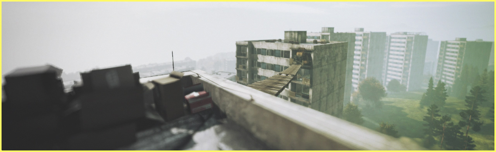

CHERNARUS LITE MODIFICATIONS
ALONG WITH THE MAP “MODIFICATION”, THE CHERNARUS LITE PROJECT ALSO INVOLVES A SERIES OF CHANGES TO MAKE IT EVEN MORE INTERESTING. JUST TO GIVE YOU A GENERAL IDEA THE NEW “FEATURES” THAT WILL BE INCLUDED IN OUR PUBLIC VERSION, WE LIST BELOW SOME OF THEM. ALL OF THEM ARE ALREADY ACTIVE AND FULLY WORKING ON OUR TEST SERVER.
CHERNARUS REDUCED, C.L.E PROPORTIONALLY ADAPTED
PERHAPS THE MOST CHARACTERISTIC FEATURE OF THE LITE PROJECT IS THAT THE SIZE OF THE CHERNARUS MAP HAS BEEN REDUCED TO ALMOST 50% OF ITS TOTAL DIMENSION, LEAVING ONLY THE CENTRAL AND WESTERN PART OF THE MAP. NATURALLY, ALL PLAYER SPAWN POINTS, ENTITIES, EVENTS, LOOT AND SUCH WERE ALSO MODIFIED AS WELL AS THE GENERAL LOOT BALANCE UNDER THIS NEW DISTRIBUTION.
REWORKED AREAS AND NEW POINTS OF INTEREST (.JSON METHOD)
THANKS TO THE RECENTLY INTRODUCED STATIC OBJECTS WITH THE 1.18 DAYZ UPDATE, AND BEING THAT THESE OBJECTS CAN BE USED ON CONSOLES THROUGH THE. JSON AND CFG GAMEPLAY METHOD, MOST OF THE CITIES HAVE BEEN LIGHT REWORKED IN AN ORGANIC WAY TRYING TO OFFER AN ALTERNATIVE ATMOSPHERE TO THE TRADITIONAL CHERNARUS ONE. PERFORMANCE WAS OBVIOUSLY A PRIORITY AS WELL AS CONSISTENCY AND SOBRIETY IN WHAT WAS ADDED. WE TAKE THIS OPPORTUNITY TO THANK DABS FOR THE AMAZING DAYZ EDITOR MOD AND THE DAYZ DEVS FOR THE TOOLS (ASSETS) PROVIDED. WITHOUT THEM, NONE OF THIS WOULD BE POSSIBLE.
CUSTOM MISSION FILES (VANILLA APPROACH)
CHERNARUS LITE HAS PRACTICALLY ALTERED MOST OF THE BASE CHERNARUS MISSION FILES, ADAPTING ALL ITS CONFIGURATION TO THE NEW DISTRIBUTION AND, AT THE SAME TIME, CUSTOMIZING SOME NEW ELEMENTS TO OFFER A MORE INTERESTING VANILLA EXPERIENCE. NEW DYNAMIC EVENTS, NEW SPAWN POINTS, MORE PROGRESSIVE LOOT DISTRIBUTION, NEW LOCATION OF THE STATIC TOXIC ZONES, MORE INCENTIVES TO VISIT THE NORTH AND WEST OF THE MAP, AMONG OTHER THINGS THAT WE DON'T WANT TO SPOIL FOR NOW.
QUALITY OF LIFE IMPROVEMENTS
BEING AN OPEN AND CUSTOMIZABLE PROJECT, EVERYONE WILL BE ABLE TO ADAPT THE MISSION AS THEY WISH. HOWEVER, WE WANTED TO LEAVE OUR MARK WITH A SEMI-HARDCORE CONFIGURATION (WHICH IS HOW WE ENJOY THE GAME). WITH THIS ONE WE TRIED TO GIVE MORE MEANING TO CERTAIN ITEMS, MORE PROGRESSIVENESS IN THE DISTRIBUTION OF THE TIERS AND PLAYER EVOLUTION AND COMPLEX BUT NOT FRUSTRATING KIND OF EXPERIENCE. RELATED TO MAPPING, QUALITY OF LIFE IMPROVEMENTS HAVE BEEN APPLIED TO CREATE POINTS OF CONTRAST, PLACES THAT CANNOT BE ACCESSED WITHOUT A COUNTERPOINT, MORE ACCESS TO ROOFS, BETTER VISIBILITY, AND MORE.
FPS PERFORMANCE IMPROVEMENTS (CLIENT)
BY REDUCING THE MAP BY 50% AND THUS ELIMINATING MANY ENTITIES AND RESOURCES THAT ARE NO LONGER NEEDED FOR THAT LARGE PERCENTAGE OF THE MAP, WE HAVE MANAGED TO OPTIMIZE THE PERFORMANCE OF BOTH SERVER AND CLIENT, MAKING CHERNARUS LITE AN EXCELLENT ALTERNATIVE FOR SMALL COMMUNITIES OR LOCAL HOSTS WITHOUT TOO MANY RESOURCES. THIS CAN ALSO BE A BIG PLUS POINT IN TERMS OF CONSOLES, WHERE THERE IS A UNIFORMITY OF HARDWARE AND HOST RESOURCES.
REDESIGN OF THE TIERS AND TOXIC AREAS
IN THE CASE OF TOXIC ZONES, WE NEVER ENJOYED THEIR PRESENCE THAT CLOSE TO THE COAST (PAVLOVO/RIFY) BECAUSE IT KINDA CONSPIRE AGAINST THE PROGRESSIVE GOAL OF GETTING THE NECESSARY EQUIPMENT MOVING IN-LAND AND, IN ADDITION, IT WAS SUBJECT TO PERMANENT EXPLOITS, BREAKING THE DYNAMICS OF TIERS. IN CHERNARUS LITE THE TOXIC ZONE IS UNIQUE AND ITS LOCATION WAS MODIFIED AND ENHANCED TAKING A GREATER RELEVANCE FOR THE GAMEPLAY. ONCE AGAIN, WE INSIST THAT EVERYTHING IS 100% CUSTOMIZABLE (AS YOU DO WITH THE VANILLA MISSIONS) AND CAN BE MODIFIED BY THE SERVER OWNER IF DESIRED.
NEW DYNAMIC EVENTS & CUSTOM INFECTEDS
ALONG WITH MODIFICATIONS TO EXISTING EVENTS (DYNAMIC TRAINS, HELI CRASHES, VEHICLES AND SO ON), CHERNARUS LITE HAS IMPLEMENTED A SERIES OF CUSTOM EVENTS (BALANCED AND OF COURSE IN LINE WITH THE GAME'S META) TO OFFER NEW ELEMENTS OF INTEREST. THE INFECTED WERE ALSO MODIFIED PROVIDING WITH MORE INDIVIDUALITY (MAINLY IN THEIR CARGOS AND ATTACHMENTS)
NEW LOOT POINTS IN VANILLA STRUCTURES
WITH THE SAME INTENTION OF IMPROVING THE VANILLA EXPERIENCE, NEW SPAWN POINTS HAVE BEEN ADDED TO SOME STRUCTURES THAT ORIGINALLY DID NOT HAVE LOOT ON THEM, SUCH AS THE APARTMENT BUILDINGS. YOU WILL NOW BE ABLE TO FIND LOOT ON THEIR ROOFS, GIVING THEM A NEW REASON TO CHECK THEM OUT (AND THE VIEW FROM THEM) AND PERHAPS REVIVING A LITTLE BIT THOSE SNIPER DUELS ONCE PREVALENT IN CHERNARUS APARTMENTS.
SECRET LORE ELEMENTS ADDED
SMALL ADDITIONS LINKED TO THE (CANON) LORE OF DAYZ WILL ALSO TAKE PLACE AROUND AS A SORT OF EASTER EGGS TO COMPLEMENT THE GENERAL AMBIANCE OF THE MAP. SOME OF THEM MAY EVEN GIVING RISE TO ORGANIC "QUESTS" (ALWAYS WITH VANILLA ELEMENTS) GIVING AN ANECDOTAL BUT INTERESTING OBJECTIVE TO THE GAMEPLAY.
SAWED-OFF AND CUSTOMIZED WEAPONS
WE HAVE ALSO ADDED AS PART OF THE LOOT ECONOMY SOME VARIANTS OF SAWED-OFF WEAPONS SO THAT THEY CAN BE FOUND DIRECTLY AROUND THE WORLD GIVING MORE DIVERSITY TO THE CIVILIAN LOW TIER WEAPONS. LIKEWISE, THE SAME WAS DONE WITH ATTACHMENTS AND COLORED WEAPONS (ONLY THOSE THAT HAVE BEEN VERIFIED TO WORK AND HAVE NO BUGS) SOME OF THEM BEING PART OF DYNAMIC EVENTS AND WITH AN EXCLUSIVITY CRITERION.
ELEMENTS FOR PARKOUR AND VERTICAL GAMEPLAY
VERTICAL GAMEPLAY HAS ALSO BEEN A MAJOR FOCUS IN THE REDESIGN OF CHERNARUS, LEADING TO MORE PARKING OPTIONS IN THE CITIES. ALL WITH A LOGICAL AND SOBER CRITERION, BECAUSE IT IS NOT SOMETHING WE ENJOY SEEING PLAYERS ON THE ROOFS OR CROSSING CABLES PERMANENTLY AND WITHOUT RESPECTING THE LAWS OF PHYSICS.
VEHICLES SPAWNING AT 90%
WHILE WE ENJOY THE GOAL OF REPAIRING YOUR VEHICLE, GIVEN THE CRITERIA OF GREATER DYNAMISM SOUGHT, WE HAVE DECIDED TO MAKE THESE MORE ACCESSIBLE BY MAKING THEM APPEAR ALMOST READY TO GO AND ONLY REQUIRING ONE OR TWO PARTS (AND FLUIDS) TO GET THEM RUNNING. TAKING INTO ACCOUNT THE PRESENCE OF BUGS LINKED TO THESE AND HOW EASY IT CAN BE TO LOSE THEM, WE DECIDED TO BALANCE THIS A BIT WITHOUT THESE BEING "GIVEN AWAY" EITHER.